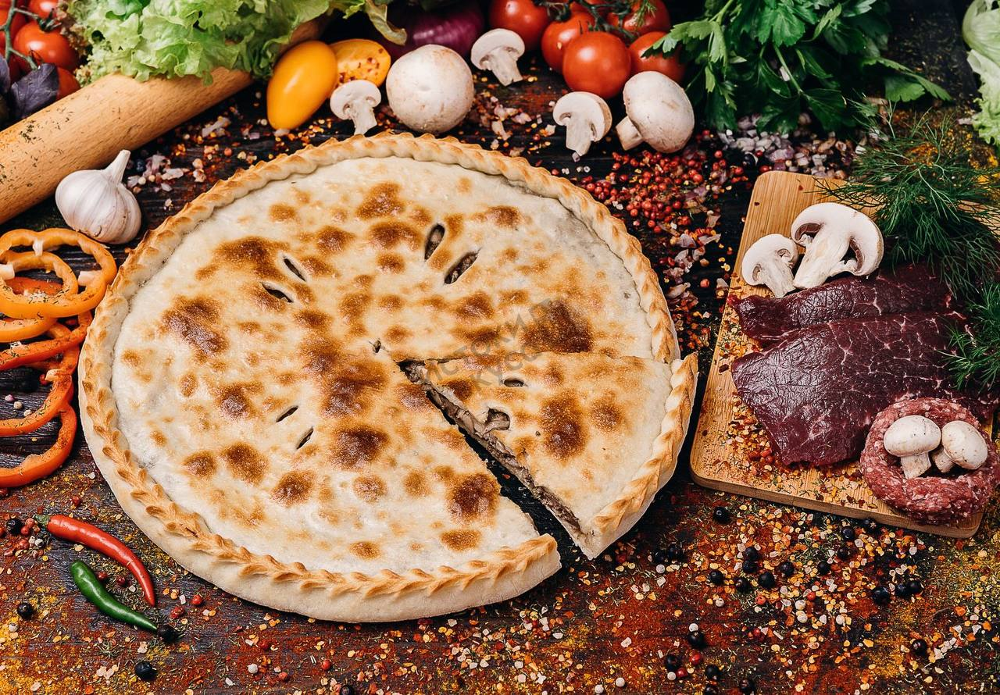
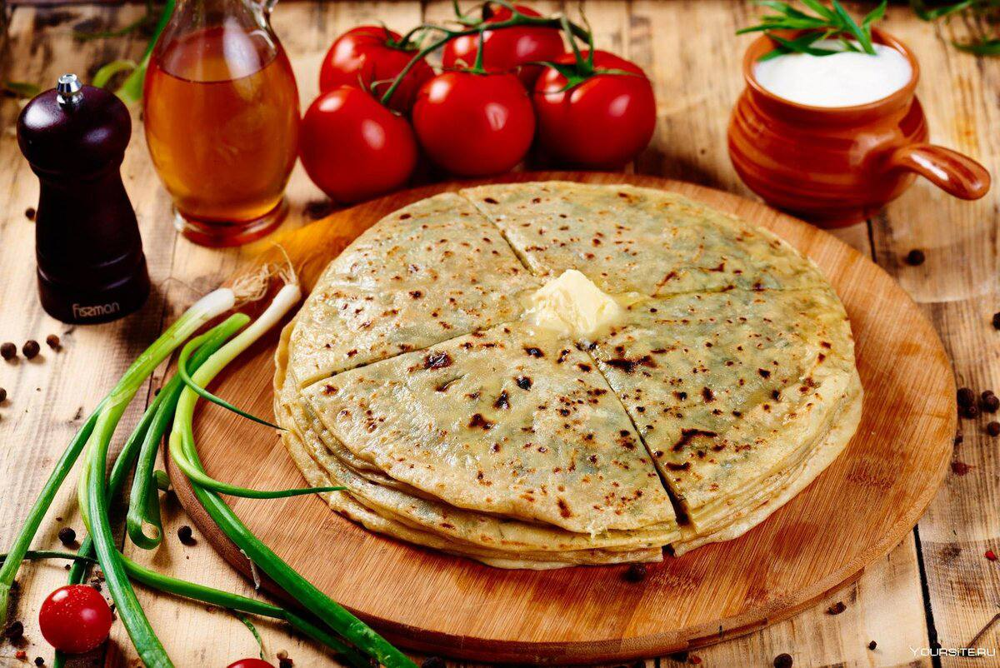
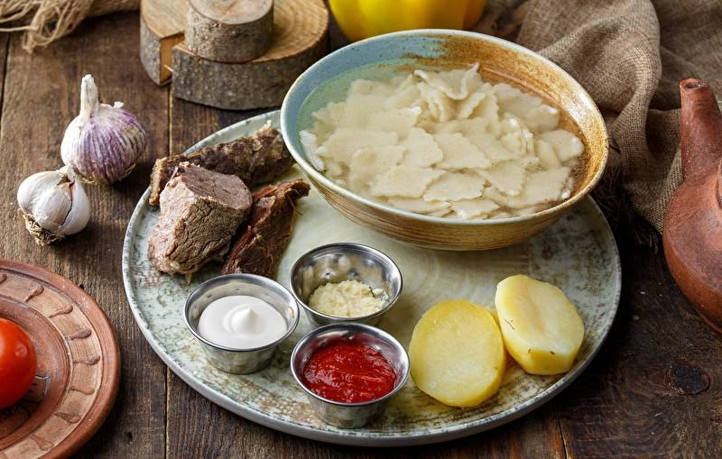
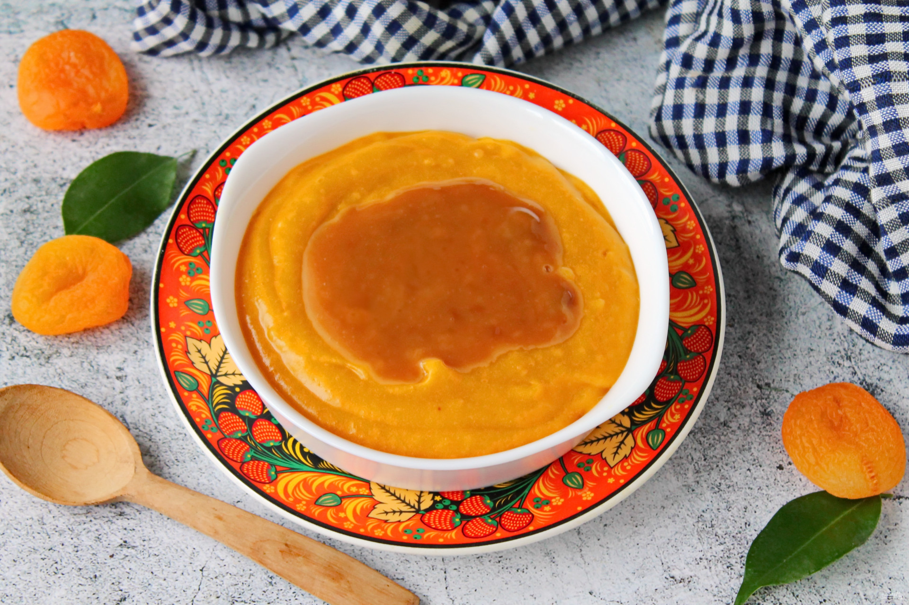
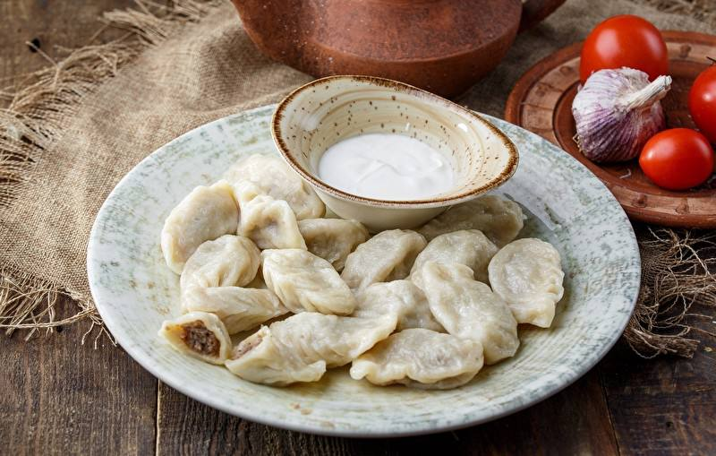
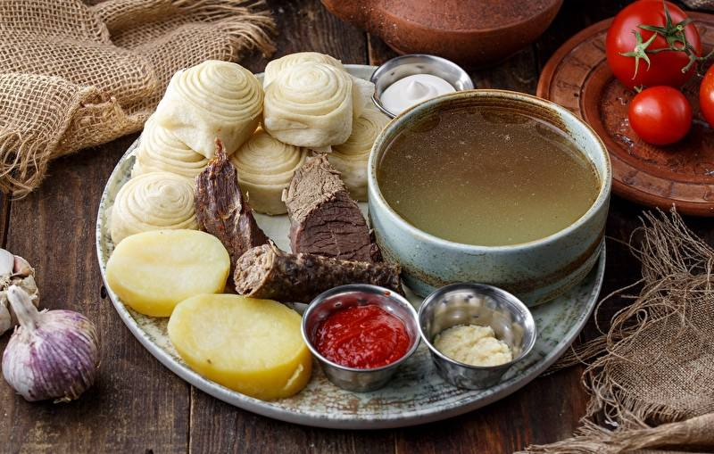
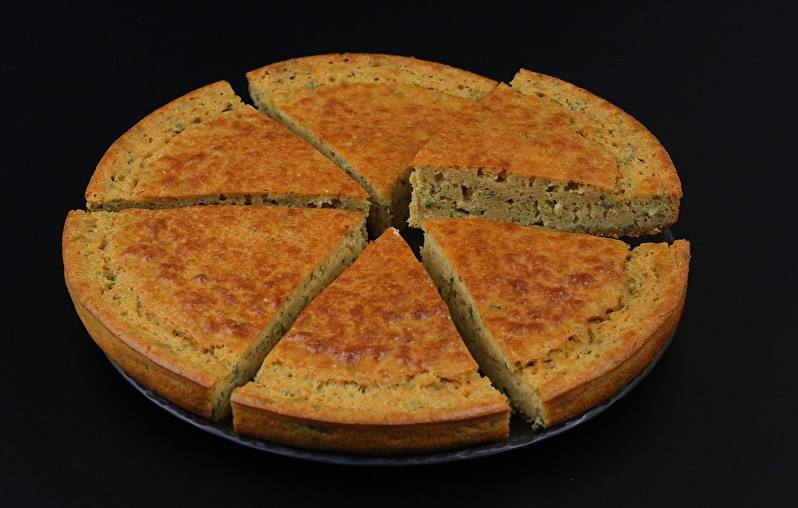

Национальные блюда

Блюдо дагестанской кухни чуду — это простые, но очень вкусные пироги с различными начинками. Приготовить чуду с мясным фаршем по этому рецепту совсем
на 7 порций
Для теста:
Мука - 3-3,5 стакана
Яйца - 2 шт.
Вода - 1 стакан (200 мл)
Соль - 0,5 ч. ложки

Ботишал
блюдо Аварской и Дагестанской кухни продукты: мука, вода, творог и массо
Время приготовления: 1 час 20 минут
Количество: 6 порций
Ингредиенты
Тесто:
Мука высшего сорта — 600 гр
Соль — 1 ч.л.
Растительное масло — 3 ст.л.
Вода — 250-300 мл
Начинка:
Творог сухой — 600 гр
Сода пищевая — 1/3 ч.л.
Соль — по вкусу
Сливочное масло (если творог нежирный) — 100 гр

Ботишал
блюдо Аварской и Дагестанской кухни продукты: мука, вода, творог и массо
Время приготовления: 1 час 20 минут
Количество: 6 порций
Ингредиенты
Тесто:
Мука высшего сорта — 600 гр
Соль — 1 ч.л.
Растительное масло — 3 ст.л.
Вода — 250-300 мл
Начинка:
Творог сухой — 600 гр
Сода пищевая — 1/3 ч.л.
Соль — по вкусу
Сливочное масло (если творог нежирный) — 100 гр

Кураговая каша с урбечом
Ингредиенты
курага - 200 г
вода - 600 мл
сахар - 1 ч.л.
мука пшеничная - 2 ст.л.
мед - 1 ч.л.
масло растительное - 1 ст.л.
урбеч - 2 ст.л.

Курзе — очень популярное блюдо в Дагестане, напоминает пельмени или манты, но другой формы, лепятся они обязательно косичкой. Наиболее популярными являются мясные курзе, часто добавляют в начинку ханц. Кроме мясной начинки, бывает: яичная, творожная, картофельная, халта.
Ингредиенты для «Дагестанские курзе с говядиной»:
Мука пшеничная / Мука — 500 г
Яйцо куриное — 1 шт
Вода (холодная) — 200 мл
Говядина — 600 г
Томаты в собственном соку — 4 шт
Лук репчатый — 2 шт
Кинза — 1/2 пуч.
Укроп — 1/2 пуч.
Тмин — по вкусу
Перец черный — по вкусу
Паприка сладкая — по вкусу
Соль — по вкусу
Масло сливочное — 30 г

Слоенный хинкал
Ингредиенты
тесто (из расчета на три порции)
вода (теплая) 250 мл
дрожжи 1 ст.л. без горки
сахар 1 ч.л. (не полная)
соль 1 ч.л. с горкой
растительное масло 3 ст.л.
мука 3 стакана (это 450 г) и еще немного

МУЧАРИ (КУКУРУЗНЫй ПИРОГ)
Издревле народы Кавказа выпекали домашний хлеб сами и эти рецепты домашних хлебов не только сохранились до наших дней, но и широко используются в быту Кавказских народов. Многие такие хлеба (лепешки) пользуются большой популярностью не только в национальной кухне, но и далеко за пределами Кавказа, как в России, так и вне ее пределах. Энергетическая ценности продукта очень велика, а экологическая ценность выше 100%. От такого хлеба не поправляются, а физическое состояние
организма остается всегда в тонусе.
Ингредиенты:
Кукурузная мука — 300 гр
Вода — 100 гр
Соль